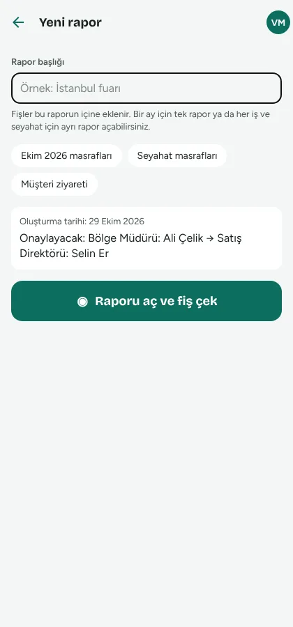
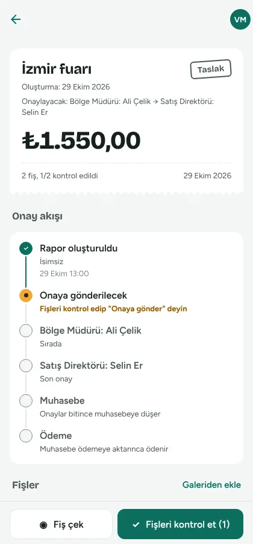

Masraf, fişten ödemeye tek akışta.
Çalışan fişi telefonla çeker. Gidero okur, sizin çizdiğiniz onay zincirinden geçirir, vergi riskini söyler, muhasebe programına aktarır ve ödemesini takip eder.
Çalışanların masrafını yönetiyorum
- Onay zincirinizi organizasyon şemasında çizin
- Onaylayıcı tek ekranda özeti görür, telefondan onaylar
- Muhasebe aktarır, ödeme yetkilisi IBAN'a öder
Müşteri firmalarımın fişlerini işliyorum
- WhatsApp'tan gelen fişleri ZIP olarak tek seferde yükleyin
- Her firma ayrı; muhasebecilerinize firma bağlayın
- Excel, Logo, Luca dosyası; firma sayısı arttıkça ucuzlar
Kimin elinde olduğu her an belli
- Çalışan rapor açar, fişleri çekerBaşlığı yazar, onaylayacak kişiyi görür. Okunamayan alanlar turuncu işaretlenir; her fişi kontrol edip gönderir.
- Onaylayıcı tek ekranda karar verirFotoğraflara tek tek bakmadan: hangi grupta ne kadar, kimlerle, hangi uyarılar.
- Muhasebe kontrol eder, aktarırYevmiye kaydı hazır gelir; Excel, Logo ya da Luca dosyası iner.
- Ödeme yetkilisi öderIBAN ve tutar tek dokunuşla kopyalanır. "Ödeme yapıldı" der; çalışana bildirim gider.


Ekranları 20 saniyede görün
Verileriniz sizin, kapı kilitli
Şirketler birbirini görmez
Her kayıt şirkete bağlıdır; veritabanı kuralları ve her güncellemede çalışan yüzlerce testle korunur.
Kart bilgisi bize gelmez
Ödemeler iyzico'nun güvenli sayfasında alınır; paket ödeme doğrulandığında kendiliğinden açılır.
IBAN yalnızca gerekene
Banka bilgisini kişinin kendisi, muhasebe ve ödeme yetkilisi görür; şirket yöneticisi bile göremez.
Silinmeyen denetim izi
Onaylar, ayarlar ve değişiklikler kim, ne zaman, eski ve yeni değeriyle saklanır.
Kimse kendini onaylayamaz
Muhasebecinin kendi masrafı da onaydan geçer; kimse kendi ödemesini işaretleyemez.
Verinizi her an indirin
Bütün raporlar, fişler ve görseller tek ZIP dosyası. Abonelik bitse de 10 gün boyunca indirebilirsiniz.
Sık sorulanlar
Fiş okunamazsa ne olur?
Fiş yine kaydedilir ve görüntüsü saklanır. Okunamayan alanlar turuncu işaretlenir; fişe bakıp elle yazarsınız. Fiş, çalışan "doğru" demeden onaya gitmez.
Telefona uygulama kurmak gerekiyor mu?
Çalışanlar iPhone ya da Android uygulamasını kullanır. Yönetici, muhasebe ve ödeme ekranları bilgisayardan da açılır.
Hangi muhasebe programlarıyla çalışır?
Yevmiye kaydıyla Excel dökümü hazırdır ve her programa aktarılabilir. Logo ve Luca biçimleri pilot muhasebe bürolarıyla doğrulanıyor; diğer programlar için örnek aktarım dosyanızı göndermeniz yeterli.
Deneme ya da abonelik bitince ne olur?
Kayıtlarınız silinmez. 10 gün boyunca her şeyi görür ve indirebilirsiniz; yeni fiş eklenemez. Sonra hesap kapanır, paket yenilenince olduğu gibi geri açılır.
Fatura kesiliyor mu?
Evet, her ödeme için şirketiniz adına e-Arşiv ya da e-Fatura düzenlenir.
Verilerim nerede tutuluyor?
Avrupa Birliği'ndeki (Frankfurt) veri merkezlerinde. Ayrıntılar KVKK aydınlatma metninde.
Bu ayın fişleri cüzdanda kalmasın
14 gün ücretsiz. Kurulum yok, kart istenmez.